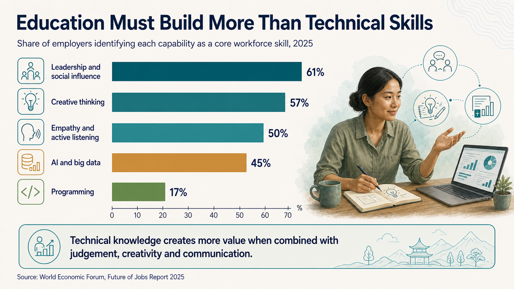
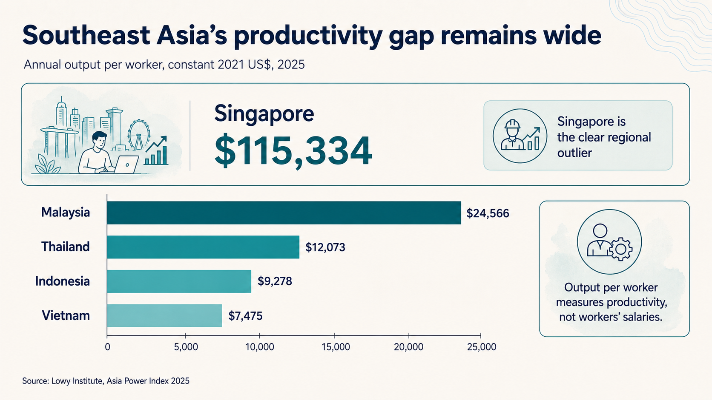
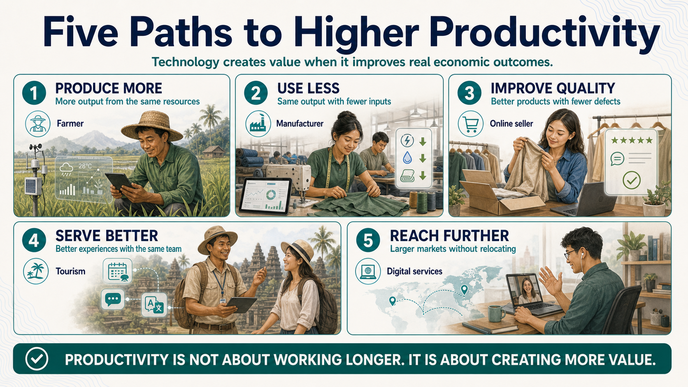
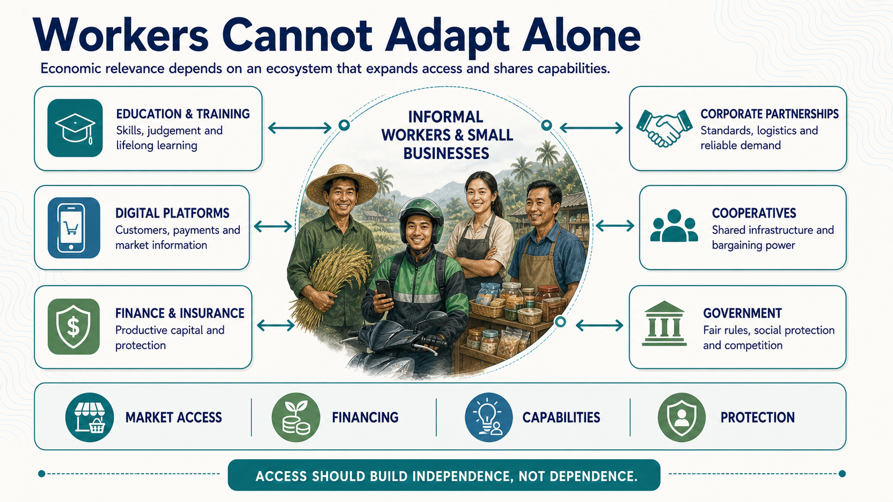
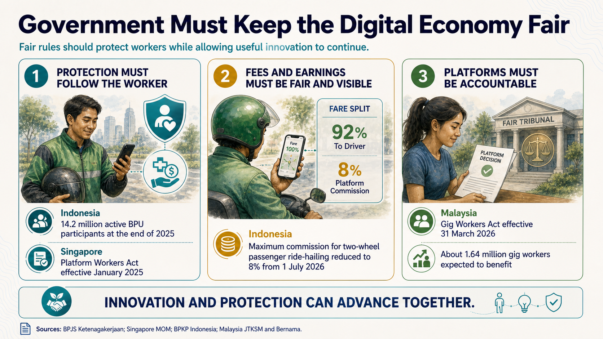

Southeast Asia enters the AI era with a predominantly informal workforce
Most discussions about artificial intelligence and employment begin with the formal workplace: offices, factories, professional services and knowledge-intensive occupations. Southeast Asia enters the AI era from a very different starting point.
In 2024, 69.3% of ASEAN employment was informal, which is approximately seven out of every ten workers.1 Indonesia illustrates the scale. In February 2026, 87.74 million of the country’s 147.67 million employed people worked informally, equivalent to about 59% of total employment.2
Informal employment does not necessarily mean unproductive or low-skilled work. It describes the conditions under which people work, including their access to contracts, labour protections and social security. Southeast Asia’s informal economy includes farmers, merchants, drivers, construction workers, home-based producers, small-business owners and many forms of self-employment. These workers already generate substantial economic and social value, but they frequently do so with limited access to capital, technology, information, training, logistics and larger markets.
This changes the region’s central AI question. Advanced economies are primarily asking whether AI will replace workers in existing formal occupations. Southeast Asia must also ask whether AI can make its existing workforce more productive. A farmer could use better weather information, financing and digital marketplaces to increase yields and reduce waste. A small retailer could improve inventory management, pricing and customer reach. A designer or developer could use AI to serve more clients across international markets. In each case, the same worker can generate more economic value.
The opportunity also contains a paradox. If technology enables one person to produce what previously required several workers, productivity may rise while the economy’s demand for labour falls. The worker who adopts the technology may become more valuable, even as other workers find fewer opportunities. Southeast Asia’s challenge is therefore not simply to calculate how many jobs AI might replace. It is to determine whether AI-driven productivity can generate enough additional output, demand, exports and income to keep a labour-abundant region economically inclusive.
Informal workers will need access to technology, capital, skills, data and markets to capture these gains. Governments, financial institutions, technology companies and larger businesses can help provide that productive infrastructure. The objective does not have to be moving every informal worker immediately into a conventional formal job. It can begin by increasing the productivity, income and bargaining power of the workers who already form the foundation of the region’s economy.
Can Southeast Asia broaden these productivity gains and create new demand faster than technology reduces the need for human labour?
Informal does not mean irrelevant
Yuval Noah Harari has given the artificial-intelligence debate one of its most provocative ideas: the possible emergence of a “useless class.” The phrase is intentionally uncomfortable. It does not mean that people become useless to their families, communities or societies. It describes a political and economic danger in which people remain fully human and socially valuable while the market no longer needs, or adequately rewards, the labour they can offer.
In 2017, Harari suggested that by 2050 a new class might emerge whose members were not only unemployed but increasingly difficult to employ.3 At Davos in 2020, he clarified that “useless” meant useless to an economic and political system, not to family and friends. He also described this outcome as a possibility rather than a prophecy.4
Harari’s warning is an intellectual frame, not a headcount. A more useful regional estimate comes from LinkedIn and Access Partnership, which calculated that job roles held by 57% of Southeast Asia’s workers, about 164 million people across six countries, could be augmented or disrupted by generative AI.5 That is an estimate of exposure to changing tasks, not a forecast that 57% will lose their jobs.
History provides reasons for both optimism and caution. Industrialisation and earlier technological revolutions replaced tasks and occupations, but they did not make humanity economically obsolete. Agricultural mechanisation reduced the number of workers needed to produce food. Factories reorganised production and created new forms of employment. Later innovations generated industries and professions that previous generations could not have imagined. Human labour was not eliminated. It was redirected towards new economic activity.
These transitions were neither painless nor evenly shared. Occupations disappeared, communities declined and many people lacked access to the skills or opportunities required by the new economy. The key question is therefore not only whether AI will create new work. It is whether existing workers can make the transition, whether new opportunities will be accessible to them and whether change will occur faster than societies can adapt.
This is why informal employment should not be confused with economic irrelevance. The challenge is not to prove that informal workers have value. Their value already exists. The challenge is to ensure that technology strengthens their contribution instead of making it easier for the market to function without them.
Education is the key to staying relevant
ASEAN has a young and growing workforce, but many people enter the labour market without completing important stages of education. An ASEAN policy brief reports that among the region’s older youth, only 55% had completed lower secondary education and 26% had graduated from tertiary education. In other words, 45% had not completed lower secondary education, while 74% had not graduated from tertiary education.6 Millions of workers may therefore be expected to adapt to AI without adequate foundational education, technical training or access to continuous learning.
Expanding access to formal education, including university education, remains essential, particularly for people from low-income and middle-income households. However, university cannot be the only pathway towards economic relevance. Vocational training, workplace learning, digital literacy and community-based education are equally important. The goal should be a system in which people can continue learning throughout their working lives rather than depending on one qualification earned at the beginning.
Preparing people for AI also requires more than technical competence. Before asking how to use a tool, people must be able to imagine what they want it to achieve. A farmer might aim to increase crop yields by 20%. A small-business owner might seek to reach twice as many customers without doubling operating costs. Turning those ambitions into reality requires judgement, risk calculation, curiosity and openness to unexpected possibilities. AI can generate options, but people still have to decide which goals are worth pursuing and which risks a community should accept.
Palantir CEO Alex Karp has provocatively argued that vocational training and unconventional ways of thinking may offer advantages in the AI era. He has pointed to practical work in physical environments and to neurodivergent people who may approach problems differently.7 This is one executive’s view, not evidence that any group is automatically protected from automation. Its useful implication is narrower: education systems should recognise practical competence, cognitive diversity, imagination and unconventional problem-solving alongside academic credentials.
Human capabilities remain important even as technical work becomes easier to automate. In the World Economic Forum’s 2025 employer survey, 61% of respondents identified leadership and social influence as a core workforce skill. Creative thinking was selected by 57%, while empathy and active listening were selected by 50%. By comparison, 45% selected AI and big data, while 17% selected programming.8 These findings do not rank which jobs are safest. They show that technical knowledge creates greater value when combined with judgement, creativity, leadership and the ability to understand other people.

Communication deserves particular attention. AI may prepare reports, analyse information and draft proposals, but important decisions still involve trust and human connection. In a 2026 Gartner survey of 645 business buyers, 45% had used generative AI as their primary source for vendor or product information. Although 70% preferred digital self-service, 69% still wanted to validate AI-generated insights with a sales representative.9 If every company can use AI to create a polished proposal, the advantage shifts towards the person who can listen, understand an unstated concern, explain a difficult trade-off and convince another person to act.
For Southeast Asian workers, communication also includes English or another international language. These skills allow developers, designers, accountants, marketers and engineers to serve foreign clients without leaving their countries. The Asian Development Bank identifies education, digital skills and English proficiency as important conditions for emerging Asian economies to export digital business services.10 The market is significant. The World Trade Organization estimates that global exports of digitally delivered services reached US$5.26 trillion in 2025, with Asia accounting for 23.3%.11 The Philippines offers a regional precedent. Its IT and business-process-management industry generated US$29.5 billion and employed 1.44 million full-time-equivalent workers in 2021.12
Education must therefore help people imagine valuable opportunities, use technology, evaluate risk, communicate across cultures and turn new capabilities into economic outcomes. The output of education matters as much as access to education itself.
Productivity is the path to economic relevance
Education can help workers remain adaptable, but economic relevance ultimately depends on whether knowledge and skills lead to greater output, better quality, lower costs or higher income. Productivity remains a major challenge across Southeast Asia. The Lowy Institute’s 2025 index, measured in constant 2021 dollars, estimates annual output per worker at US$115,334 in Singapore. Among selected larger Southeast Asian economies, Malaysia follows at US$24,566, Thailand at US$12,073, Indonesia at US$9,278 and Vietnam at US$7,475.13 These figures measure output, not wages. They show that the region’s deeper challenge is enabling more workers to generate greater value from their time, skills and resources.

Closing these gaps does not mean asking people to work longer or replacing as many workers as possible. It means helping workers and businesses create more value from the resources they already have. Many improvements do not need to begin with advanced AI. They may start with affordable internet, digital payments, online marketplaces, inventory software or better information. AI can build on this foundation by improving analysis, prediction, communication and decision-making. In practical terms, there are five paths to higher productivity: produce more, use less, improve quality, serve better and reach further.

1. Produce more
Producing more means increasing output without a proportional increase in land, labour, time or capital. It can be measured through output per worker, output per working hour or crop yield per hectare. A smallholder farmer could use digital weather forecasts to plan planting, mobile tools to identify crop disease earlier and market information to decide what to grow and when to sell. If the same field produces a larger harvest with roughly the same labour and resources, productivity has increased. Technology strengthens the farmer’s decisions, while local knowledge remains essential for turning information into results.
2. Use less
Using less means maintaining output while reducing the materials, energy, time or capital required to produce it. Relevant measures include material used per unit, energy consumption, production time, waste and machine downtime. A small garment manufacturer could use digital inventory tracking to avoid excess fabric purchases, production-planning software to reduce idle time and maintenance alerts to prevent unexpected equipment failures. Producing the same number of garments with less waste and fewer interruptions improves productivity without requiring workers to work longer.
3. Improve quality
Improving quality means increasing the reliability, usefulness or value of a product without proportionally increasing the resources used. It can be measured through ratings, defect rates, complaints, returns, refunds and repeat purchases. An e-commerce clothing seller could analyse reviews and return reasons to identify recurring problems with sizing, stitching or packaging. If better specifications and targeted quality checks reduce returns while improving ratings and repeat purchases, the seller creates more value from roughly the same inventory, labour and online store.
4. Serve better
Serving better means improving the customer experience without a proportional increase in staff, time or operating costs. Measures can include customer ratings, response times, repeat bookings, spending per visitor and customers served per worker. A small hotel or tour operator could use online booking, digital payments, translation tools and automated messages to remove administrative friction. Those tools do not replace the people who welcome visitors, explain local culture, handle unexpected situations and create genuine human connections. They allow the same team to spend more time on hospitality.
5. Reach further
Reaching further means serving more customers or entering larger markets without relocating or opening an overseas office. It can be measured through customers and markets served, export revenue, income per worker and the share of earnings from international clients. A Filipino designer or software developer can use freelance platforms, cloud collaboration, digital payments and AI-assisted tools to work for foreign clients while remaining in the Philippines. Technology can help with research, translation and routine production, but people still need to understand the client, negotiate and build trust. Workers can potentially earn more without leaving their country, their families or the places they call home.
For Southeast Asian workers, especially those in the informal economy, AI and digital technology do not have to make their roles obsolete, although they will change how economic value is created and rewarded. These tools can increase productivity and expand what people are capable of doing while complementing experience, local knowledge, human judgement and personal relationships. However, workers cannot make this transition alone.
Workers cannot adapt alone
Informal workers are often described as operating outside the formal economy, but they are not outside the economy itself. Farmers produce food, drivers move people and goods, merchants distribute everyday necessities, construction workers build homes and small businesses provide services throughout their communities. Together, they form much of the backbone of Southeast Asia’s economy. Their ability to adapt matters not only for their own livelihoods, but also for the households, businesses and consumers who depend on them.
Individual workers cannot build every system they need. Digital platforms can connect them to customers, financial institutions can provide capital, corporations can offer technology and market access, and cooperatives can create shared infrastructure and bargaining power. Because millions of people depend on these institutions, their decisions require wisdom and fairness. They should help informal workers find customers, obtain productive financing and develop capabilities they could not build independently.

1. Platforms can create market access
Digital platforms connect workers and small businesses to customers, payments, logistics and market information without requiring them to build their own physical networks. A driver does not need to create a booking system, a restaurant does not need to build a delivery network and an online seller does not need to open stores in multiple cities. Their impact can be assessed through participation, income and sales generated, and the number of customers or markets reached.
The company-reported scale is already significant. Gojek says its ecosystem includes about 3 million driver-partners and 6.4 million merchants.14 Grab says its drivers and merchant-partners earned US$15.3 billion through the platform in 2025.15 Shopee reports that small and medium-sized sellers generated more than US$270 billion in sales during its first decade.16 These figures do not reveal how many participants rely on a platform as their main income, but they show the responsibility involved. Platforms should not see this scale only as commissions, fees, data and transaction volume. They should also consider their partners’ prosperity, safety, income stability and ability to grow.
2. Data can unlock financing
Many informal workers are considered unbankable because conventional lenders cannot easily assess their income. They may lack payslips, financial statements, collateral or formal credit histories. Yet completed trips, digital payments, customer orders, crop purchases and sales records can provide evidence of economic activity. With the worker’s informed consent, institutions can use this information to assess cash flow and productive potential. Success should be judged by first-time access, affordable terms, repayment performance, productive use and subsequent changes in income, not simply by the amount of debt distributed.
Grab reports that one in three active driver-partners took a loan through its ecosystem in 2025 and that 68% of those borrowers were accessing formal credit for the first time.15 In Indonesia, Jiva combines digital records with local agents to provide agricultural inputs on credit to maize farmers and purchase crops after harvest. By the end of 2022, the platform had reached more than 12,000 transacting farmers.17 Models like this can link financing to productive activity and repayment to the timing of income. Without affordable rates, transparent terms and responsible data use, however, financial inclusion can become over-indebtedness.
3. Partnerships can share capabilities
Informal workers and small businesses may have productive ability but lack the standards, certification, logistics, technology and relationships needed to enter larger markets. Corporations can bridge this gap by explaining buyer requirements, providing technical guidance, supporting packaging and certification, organising transportation, or becoming reliable buyers. A food processor can purchase crops from smallholders, a retailer can source products from local manufacturers and an export company can aggregate goods from multiple producers before selling them overseas.
This matters because higher productivity does not automatically create higher income. A farmer may produce more and a manufacturer may improve quality, but neither improvement generates greater value without reliable demand. Fair partnerships can give corporations more dependable local supply chains while giving workers market certainty, knowledge and room to grow without surrendering their independence. Transparent prices, reasonable standards, timely payments and fair bargaining conditions are essential. The formal economy should become a bridge to larger opportunities, not another source of dependence.
Together, these pathways define a role for the formal economy. They also create new forms of dependence when one institution controls customer visibility, transaction data, financing, prices and access to work. The objective should be shared economic relevance and more equal access to opportunity. Digital transformation should not become another system that extracts as much value as possible for the benefit of only a small group of companies, investors or institutions.
Government must keep the digital economy fair
Digital platforms can expand access to customers, financing and technology, but they can also concentrate power in the institutions that control those opportunities. An individual driver cannot negotiate a platform’s commission alone. A small online seller may not know why one product appears in search results while another remains invisible. Workers and merchants may be called partners, but the platform usually controls the rules, data, algorithms and access to customers.
Government does not need to manage every platform or prevent companies from earning a reasonable profit. Its role is to establish minimum protections, monitor competition and ensure that workers have understandable rules and meaningful ways to challenge decisions. Fair regulation should protect workers without preventing innovation, while recognising that an individual worker and a large technology company do not possess equal bargaining power.

1. Protection must follow the worker
Social protection should not depend entirely on having a conventional employer. Informal and platform workers still face accidents, illness, disability, income interruptions and the need to prepare for retirement. Protection should remain accessible when workers change platforms, combine several sources of income or move between formal and informal work. Progress can be assessed through participation, contribution continuity, successful claims and the share of workers protected against accidents and income loss.
Indonesia’s BPJS Ketenagakerjaan extends protection to informal workers through its Bukan Penerima Upah, or BPU, programme. Active BPU participation reached 14.2 million workers at the end of 2025, an increase of 43.4% from the previous year.18 Singapore has taken a different approach. Since January 2025, its Platform Workers Act has required platform operators to provide work-injury compensation, contribute to retirement savings and recognise representation rights.19 Both approaches extend protection without requiring every independent worker to become a conventional employee.
2. Fees and earnings must be fair and visible
Platforms need revenue to maintain technology, attract customers and provide support. Workers and sellers should still understand how much they are paying, what the fees cover and how changes affect their actual earnings. Governments should examine total deductions, including service fees, transaction charges, mandatory discounts, advertising expenses, penalties and unclear deductions from incentives, rather than monitoring only the headline commission.
Indonesia provides a recent case. Beginning on 1 July 2026, the government reduced the maximum platform commission on two-wheel passenger ride-hailing trips from 20% to 8%, leaving drivers with 92% of the fare.20 The change could materially increase the share retained by drivers, but a lower headline commission is not enough if charges later appear elsewhere. Government should continue monitoring total deductions, passenger prices, service quality, driver demand and platform sustainability. Fair regulation requires balancing workers, consumers and companies.
3. Platforms must be accountable
Digital platforms influence who receives work, how much workers earn and whether an account can continue operating. These decisions may be supported by algorithms, but they directly affect livelihoods. Governments should require platforms to explain important decisions, communicate changes clearly, provide notice before suspending accounts and offer a fair process through which workers can challenge mistakes.
Malaysia offers a strong regional example. Its Gig Workers Act 2025 came into force on 31 March 2026 and is expected to protect about 1.64 million gig workers.2122 The law requires clearer service agreements and income rates, prohibits discrimination, expands social protection and gives workers access to conciliation and a dedicated tribunal. It also requires written notice when an account is suspended. If an investigation clears the worker, the account must be restored and the worker may receive part of the income lost during the suspension. Governments do not have to choose between innovation and protection. Platforms can grow while workers receive clear rights and fair procedures.
Fair regulation is not intended to prevent companies from succeeding. It is intended to ensure that success does not depend on hidden rules, excessive extraction or transferring most economic risks to individual workers. The digital economy should give people a fair opportunity to remain economically relevant, share in productivity gains and improve their livelihoods.
Relevance must become a shared responsibility
Harari’s warning matters because economic irrelevance is not only a labour-market problem. It is a question of dignity, bargaining power and who gets to participate in the future. Yet his most useful reminder may be that “technology is never deterministic.”4 AI does not arrive with one unavoidable social outcome. Institutions, investments and public choices will determine whether it becomes a substitute for people, a tool that strengthens them, or both in different parts of the economy.
Can Southeast Asia keep its workers relevant in the age of AI? Yes, but relevance must become a shared responsibility. Workers need opportunities to learn and adapt. Businesses and platforms need to expand capabilities instead of treating people only as costs or sources of data. Governments need to protect workers without closing the door to innovation. If the region can combine education, productivity, institutional support and fair rules, AI can help millions of people create more value from the places where they already live.
The goal is not to preserve every task unchanged. It is to ensure that technological progress expands human capability and economic participation rather than narrowing both.
Sources
- 1International Labour Organization, “Employment challenges and policies in ASEAN: Executive summary”, 2024.
- 2Statistics Indonesia, “Indonesia’s economy remains resilient and grows solidly in the first quarter of 2026”, 6 May 2026.
- 3The Guardian, “Yuval Noah Harari: ‘Homo sapiens as we know them will disappear in a century or so’”, 8 May 2017.
- 4World Economic Forum, “Read Yuval Harari’s blistering warning to Davos”, January 2020.
- 5LinkedIn Economic Graph, “We need a skills-based approach to harness the AI opportunity in Southeast Asia”, 2024.
- 6ASEAN Secretariat, “Promoting Business Incubation Strategies to Support Entrepreneurship and Startup Businesses of Young Talents”, 2024.
- 7Fortune, “Palantir CEO says AI ‘will destroy’ humanities jobs”, 11 April 2026.
- 8World Economic Forum, “Future of Jobs Report 2025”, 2025.
- 9Gartner, “Gartner Survey Finds 69% of B2B Buyers Turn to Sales Reps to Validate AI-Generated Insights”, 20 May 2026.
- 10Asian Development Bank, “Emerging Asia’s Service Exporters”, 2025.
- 11World Trade Organization, “Global Trade Outlook and Statistics”, March 2026.
- 12IT and Business Process Association of the Philippines, “The Philippine IT-BPM Industry Roadmap 2028”, 2022.
- 13Lowy Institute, “Asia Power Index 2025: Productivity”, 2025.
- 14Gojek, company ecosystem figures, accessed 29 August 2026.
- 15Grab, “Grab’s ESG progress in 2025: Rising as One”, 16 April 2026.
- 16Sea, “Shopee Marks 10 Years of E-Commerce Innovation and Impact”, 1 December 2025.
- 17World Bank, “Working with Smallholders: A Handbook for Firms Building Sustainable Supply Chains”, 2023.
- 18BPJS Ketenagakerjaan, “BPJS Ketenagakerjaan Bayarkan Manfaat Rp68,24 Triliun Sepanjang 2025”, 2026.
- 19Singapore Ministry of Manpower, “What the Platform Workers Act covers”.
- 20Indonesia’s Financial and Development Supervisory Agency, “Presiden Prabowo Perkuat Perlindungan Ojol”, 2026.
- 21Department of Labour Peninsular Malaysia, “Act 872, Gig Workers Act 2025”.
- 22Bernama, “Gig Workers Act 2025 comes into force, protects 1.64 million gig workers”, 31 March 2026.